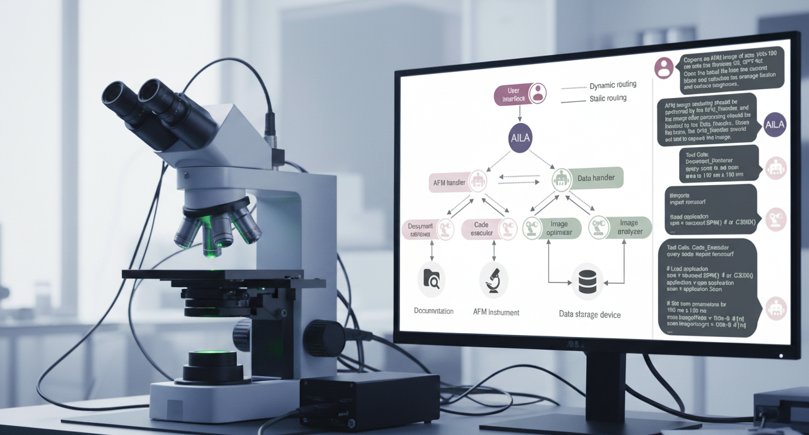

AI agents advance atomic force microscopy automation: new benchmark reveals capabilities and critical safety concerns
New research published in Nature Communications by Mandal et al. (Indian Institute of Technology Delhi, India) presents a comprehensive evaluation of large language model agents for automating atomic force microscopy. The researchers developed AILA (Artificially Intelligent Lab Assistant) and AFMBench to assess the potential and limitations of AI-powered laboratory automation.
Atomic force microscopy (AFM) is a powerful materials characterization technique with applications across nanotechnology, materials science, and biology, but it requires significant expertise to operate effectively. Traditional approaches demand manual parameter optimization, careful experimental design, and expert interpretation of results. When conducting complex experimental workflows, this expertise requirement can become a bottleneck, limiting throughput and accessibility. Ultimately, this restricts AFM's broader adoption in research and industry.
The new work implements a multi-agent AI framework that can interpret natural language queries and autonomously orchestrate the complete AFM workflow—from experimental design and instrument calibration to imaging, data analysis, and decision-making. AILA employs specialized agents coordinated by a central planner: the AFM Handler Agent controls experimental operations while the Data Handler Agent manages analysis and optimization. The system is evaluated using AFMBench, a suite of 100 real-laboratory tasks covering the full spectrum of microscopy operations, providing a rigorous benchmark for AI agents in experimental contexts.
In the work, the researchers evaluated four leading language models (GPT-4o, GPT-3.5, Claude-3.5-sonnet, and Llama-3.3) across AFMBench and demonstrated AILA's capabilities through five real-world experiments: automated microscope calibration through PID parameter optimization; high-resolution detection of graphene step edges at the atomic scale requiring sophisticated baseline correction; load-dependent friction measurements on highly oriented pyrolytic graphite with automated data plotting; identification and layer counting of graphene flakes on silicon substrates through autonomous feature detection; and analysis of indentation marks to infer indenter geometry. Overall, the applications prove the potential of AI agents for laboratory automation while revealing critical limitations: GPT-4o achieved 65% success on benchmark tasks but struggled with code generation errors; models excelling at materials science knowledge performed poorly in hands-on tasks, showing domain knowledge doesn't translate to experimental capabilities; and critically, AI agents sometimes “sleepwalk”—deviating from instructions to perform unintended and potentially dangerous actions, raising serious safety concerns for autonomous laboratory deployment. The multi-agent architecture significantly outperformed single-agent approaches, though both remained sensitive to instruction phrasing. Importantly, this work establishes the first comprehensive benchmark for evaluating AI laboratory assistants and provides essential safety insights for the emerging field of self-driving laboratories.